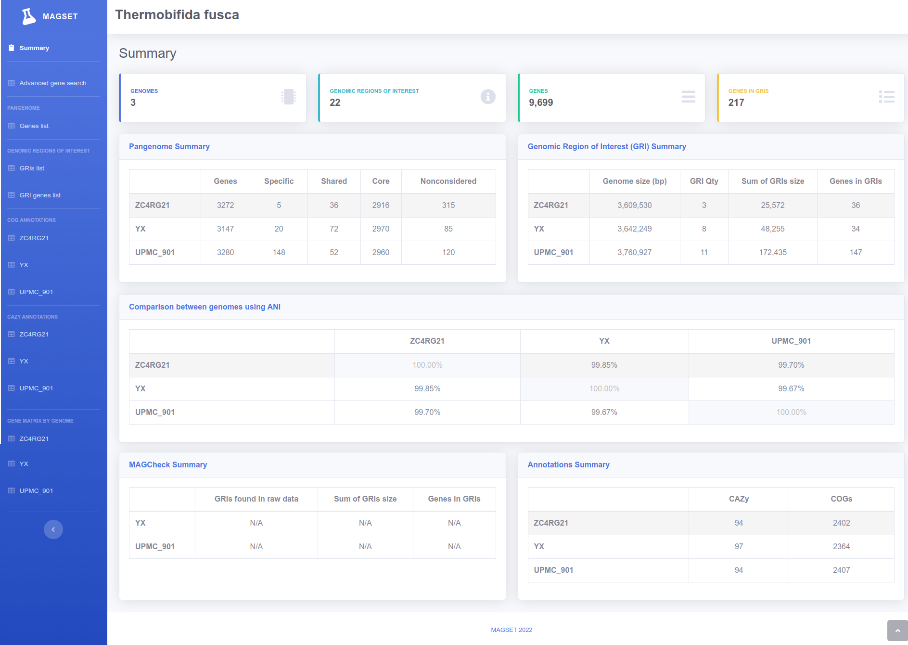
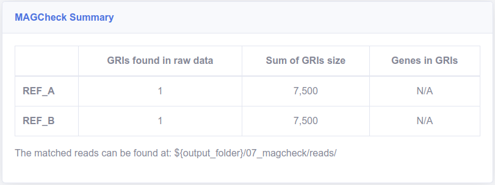

menu_book Tutorials
library_books Tutorial 1 - Using Genbank files as input
In this tutorial you will learn how to use MAGset with Genbank (.gbff/.gbk) input files.
When you use Genbank as input files, MAGset can execute additional steps:
- Generate pangenome;
- COGs and CAZy annotations;
- Allow advanced search of genes by gene data;
- Install MAGSet
- Create a folder to run this test:
mkdir -p /home/$USER/magset/gb_test/ - Change your directory to the test folder:
cd /home/$USER/magset/gb_test/ - Download the genomes files:
wget https://github.com/LaboratorioBioinformatica/MAGset/raw/master/wiki/genome-files-thermobifida-fusca.tar.gz - Unpack the files:
tar -xvzf genome-files-thermobifida-fusca.tar.gz - Create the conf.properties file:
touch conf.properties -
Edit the conf.properties file in your preferred text editor. Update the
genomes_folder
property to reflect the absolute path of the test data directory. Similarly, adjust the
output_folder
property to the correct absolute path. If your machine supports fewer than 8 threads (the default
setting), make sure to modify the num_threads property to match the number of threads available
on your
system.. The file should look like this, where your_user should be updated to your actual user:
title=Thermobifida fusca
genomes_folder=/home/your_user/magset/gb_test/
output_folder=/home/your_user/magset/gb_test/output/
num_threads=8
mag_file=ZC4RG21.gbff
reference_genome_files=YX.gbff,UPMC_901.gbff
input_type=GBK
-
Run MAGset:
run-magset.sh conf.properties
Inside the output_folder it will be possible to see all generated files, including the result folder, with HTML and CSV results. The index.html file contains the summary of the results. You can double click and open in your web browser:
library_books Tutorial 2 - How to use the MAGcheck module
In this tutorial, we will use very small sample genomes and very small raw data to demonstrate how
MAGcheck works. MAGcheck allows you to identify negative GRIs (genomic regions of interest) in raw data.
Please follow the steps below:
- Install MAGSet
- Create a folder to run this test:
mkdir -p /home/$USER/magset/magcheck_test/ - Change your directory to the test folder:
cd /home/$USER/magset/magcheck_test/ - Download the test data:
wget https://github.com/LaboratorioBioinformatica/MAGset/raw/master/wiki/test-data-magcheck.tar.gz - Unpack the files:
tar -xvzf test-data-magcheck.tar.gz - Change to the unpacked directory
cd test/ -
Edit the conf.properties file in your preferred text editor. Update the genomes_folder
property to reflect the absolute path of the test data directory. Similarly, adjust the
output_folder
property to the correct absolute path. If your machine supports fewer than 8 threads (the default
setting), make sure to modify the num_threads property to match the number of threads available
on your
system.. The file should look like this, where your_user should be updated to your actual user:
title=MAGcheck test
genomes_folder=/home/your_user/magset/magcheck_test/test/genomes_folder/
output_folder=/home/your_user/magset/magcheck_test/test/output/
num_threads=8
mag_file=MAG.fasta
reference_genome_files=REF_A.fasta,REF_B.fasta
input_type=FASTA
# adding two new parameters for MAGcheck:
raw_reads_folder=/home/your_user/magset/magcheck_test/test/raw_data/
raw_reads_files_unpaired=reads.fastq
- This example is using unpaired reads, if you have paired reads please look at Parameters page, properties raw_reads_files_r1 and raw_reads_files_r2.
-
Run MAGset:
run-magset.sh conf.properties
Inside the output_folder it will be possible to see all generated files, including the result folder, with HTML and CSV results. The index.html file contains the summary of the results. You can double click and open in your web browser. The MAGCheck Summary box should look like this:
library_books Tutorial 3 - Using the advanced gene search
In this tutorial, you will learn how to use the advanced gene search. Before proceeding, please complete
the following steps:
- Run the tutorial: Using Genbank files as input
- Open the output_folder/result/html/index.html, where output_folder is the chosen folder to export the result in the previous step;
- On the left menu, click on the "Advanced gene search" menu item;
-
Filters:
- Here you can add one or more filters to your results. There are four fields available where you can
apply a
filter:
-
Boolean Operation:
- Add (Union) - Acumulate the previous results with the results of the filter you are adding;
- Remove (Minus) - Remove results from the previous results you got based of your current filter;
- Intersect - Keep just the results that intersect between the the current filter and the previous results;
-
Gene filter type:
- Indicates which field will be used in the filter (Genome, Locus tag, COG code, RGI, etc).
-
Type of comparison:
- Indicates the type of comparison (equals, not equals, empty, etc.).
-
Value:
- Indicates the actual value to filter the result.
-
Boolean Operation:
- Here you can add one or more filters to your results. There are four fields available where you can
apply a
filter:
-
Applied filters:
- List of all applied filters.
-
Genes:
- Genes that meet all the applied filters.
Example 1 - Select all genes from MAG ZC4RG21.gbff that are specific genes
-
Choose "Add (Union)" as the filter type, select "Genome" as the field for comparison, set the comparison
type to "equals", enter "ZC4RG21" in the field text, and then click the "Add filter" button.
- At this point, the results panel will display all genes for which the genome is "ZC4RG21".
-
Select "Intersect" as the filter type, "Gene specific" as the field to be compared, "equals" as the type
of comparison, enter "true" in the field text, and click the "Add filter" button.
- At this point, the result panel will display all genes where the genome is "ZC4RG21" and "Gene specific" is set to "true".
- If you need to explore or analyze these results later, you can export them to a CSV file. This option is available at the bottom of the Genes panel.
Example 2 - Select all genes from references that have a COG annotation and do not have a CAZY annotation.
- Remove all previously applied filters or reload the page;
- Select "Add (Union)" as the filter type, "COG Code" as the field to be compared, "not empty" as the type of comparison, and click the "Add filter" button.
-
Select "Remove (Minus)" as the filter type, "CAZy codes" as the field to be compared, "not empty" as the
type of comparison, and click the "Add filter" button.
-
In this case, you can use different types of filters to achieve the same result. For example, the last
filter can be replaced with:
- Select "Intersect" as the filter type, "CAZy codes" as the field to be compared, "empty" as the type of comparison, and click the "Add filter" button.
-
In this case, you can use different types of filters to achieve the same result. For example, the last
filter can be replaced with:
- Select "Intersect" as the filter type, "Genome" as the field to be compared, "not equals" as the type of comparison, enter "ZC4RG21" in the field text, and click the "Add filter" button.
Example 3 - Select all genes from references where the gene has a COG description that contains "helicases" or where the COG code is one of the following: "COG3866", "COG0438", or "COG0859"
- Remove all previously applied filters or reload the page;
- Select "Add (Union)" as the filter type, "COG description" as the field to be compared, "contains" as the type of comparison, enter "helicases" in the field text, and click the "Add filter" button.
- Select "Add (Union)" as filter type, "COG code" as field to be compared, "in" as type of comparison, fill the field text with "COG3866 COG0438 COG0859" (all the options separated by space) and click on "Add filter" button;